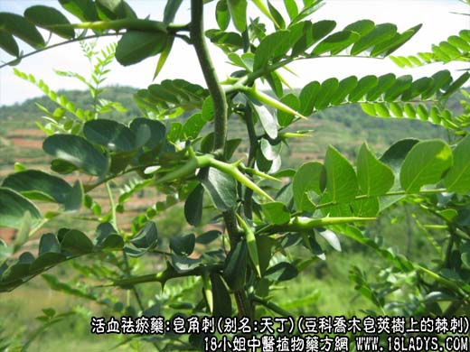
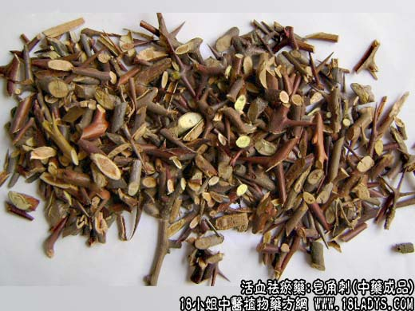

皂角刺，别名：皂荚刺、皂刺、天丁、天丁明、皂角针、皂针，为豆科乔木植物皂荚树上的棘刺。辛，温。归肝、胃经。
1．消肿托毒：用于消肿排脓，疮疡肿痛，脓熟不溃，单用或配活血药同用。
2．祛风杀虫：用于麻风，顽癣等症。
【药物形态】
本品为主刺和1～2次分枝的棘刺。主刺长圆锥形，长3～15cm或更长，直径0.3～lcm；分枝刺长1～6cm，刺端锐尖。衷面紫棕色或棕褐色。体轻，质坚硬，不易折断。切片厚0.1～0.3cm，常带有尖细的刺端；木部黄白色，髓部疏松，淡红棕色；质脆，易折断。气微，味淡。
【药效鉴别】皂角刺药性锐利，攻走血脉，直达经络，其活血消肿排脓通乳之功与穿山甲相似，为外科疮疡肿毒常用药。
【功效与作用】对金黄色葡萄球菌、卡他球菌、表皮葡萄球菌有抑制作用。
【用量用法】3——15g，水煎服，或入剂。外用适量。